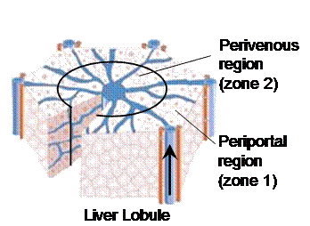

Sinusoidal Segment Interactive 3D Visualization

Executable file is available upon request.
Description
This movie is an interactive 3D visualization of antipyrine & sucrose compounds percolating through one (#7) out of about 60) Sinusoidal Segment in the In Silico Liver (over 400 time steps). The three grid spaces (pink: sinusoidal, yellow: endothelial, and blue: space of the space of Disse plus hepatocytes) are rendered as concentric cylinders. Two views are provided of these cylinders. One is a side view (upper right) and the other is a head-on view (lower left). At the lower right the raw grid data is directly represented.
For each grid space point there are sesveral options:
- It can be empty, that is, no cell there (rendered as fully transparent)
- It can contain an empty cell (rendered as mostly transparent white)
- It can contain antipyrine or sucrose particles outside of a cell (red or green)
- It can contain a cell with one or more free antipyrine particles within it.
- It can contain a cell with one or more bound antipyrine particles within it. For example: "3 bound" means 3 bound antipyrine particles in a cell.
Each "smooth" control on the upper left is used to distinguish the spaces; it causes the grid data to be blurred or not. The blurring is being applied as a texture to a cylinder and could be viewed as representing the likelihood that a compound of that type is actually in that location.
The "Show" control selects the space-sinusoidal, Endothelial and Space of Disse & Hepatocytes (SoD) to be observed (or not).
Selecting "Rotate" causes the cylinder to rotate.
The ">||" "||<" controls causes in silico time to move one step forward or backward.
Notes:
- Compounds are injected into the In Silico Liver using a tight distribution function;
- Antipyrine, but not sucrose, can enter cells;
- There are objects within "cells" that can bind antipyrine;
- Antipyrine bound within "hepatocytes" in the Disse layer can be metabolized.
- Metabolites of antipyrine are not visualized;
- In this movie there is no more than one free solute per cell.
To view the movie you need Macromedia Shockwave Player 10 running on a late-model computer (Mac or Win) with openGL and hardware 3D acceleration.
For additional biological and pharmacokinetic detail see:
Hung DY, Chang P, Weiss M, Roberst MS (2001) Structure-hepatic disposition relationships for cationic drugs in isolated perfused rat livers: transmembrane exchange and cytoplasmic binding process. J Pharmacol Exp Ther. 297:780-9.
Functional Unit Representation Model Project

FURM is a modeling method for building a multitier, in silico apparatus to support iterative experimentation on multiple models.
The development of any given biological model is driven by the experimental context in which it will be used. Hence, computer models are often over-fitted to a single, unique, experimental context and fail to be useful in other situations. To solve this problem, multiple, separate models of a biological system are required to adequately represent that system's behaviors. This is in stark contrast to the biological components to which these models refer, which can be placed in almost any experimental context relevant to their various behaviors. The problem presents a fundamental breakdown in the extent to which any computer model represents its referent. We present the basics of a modeling method, FURM (Functional Unit Representation Method) that attempts to address this breakdown by enforcing and encouraging the use of some basic methodological principles in the development of any functional unit model.
Relating GeneChip® Data To Measures of Pharmacological and Toxicological Phenotypes
Can one use microarray measured gene expression (MMGE) data to predict pharmacological and toxicological phenotypes in animals and man? Can similar data be used to account for a significant portion of the individualized variability in patient drug response? In collaboration with the Computational Biology Group at Roche Palo Alto, we are evaluating and contrasting the computational approaches that have been proposed to address these questions. Two large sets of MMGE data are being used to compare and contrast the information that results from use of the various available statistical pattern extraction, clustering and evaluation tools and techniques. Our current focus is on a variable selection and testing strategy that is particularly driven by directly relevant archival phenotypic data, information and knowledge.
Toward Genotype-Phenotype Linkage to Optimize Cancer Treatments
This project is part of a larger undertaking that will assemble, test and validate a prototype decision support framework (DSF). We are using both informatics and simulation strategies to create a "mirror" population of hypothetical patients that enables linkage of the information from highly multiplexed molecular analyses through available systems knowledge to patient clinical data so that expected changes in treatment outcomes for new patients can be visualized (on a computer) interactively as various options and/or new data are considered. The DSF is intended to function as part of an institution-wide, patient centered system. With such a system, the patient, the physician, and researchers will be able to detect important, decision impacting relationships contained within the cancer research and clinical trial databases relationships that otherwise might remain undetected. The DSF will also allow the decision makers, the patient and physician, to ask a variety of probing "what if" questions, and to visually compare and contrast the answers graphically represented, with expected treatment results in real time. Having such a capability will allow customized (and, ideally, optimized) individual treatments, thereby lowering costs while improving both outcomes and the patient's quality of life.
Elucidating Critical Elements Within Pharmacogenetic and Biomolecular Pathways
We are systematically evaluating the applicability of graph theoretic techniques to facilitate utilization of large pharmacological, genetic and physiological system models. The conceptual or computational model (such the above Stochastic Activity Networks) in is first represented as a network graph having nodes and edges with respective weights. Computational graph analysis is then used to bring critical elements into focus by grouping closely related system elements prior to finding and ranking elements or paths between elements that have the greatest influence on the system. When applied to pharmacological and physiological system models, such "critical elements" represent potential drug targets. By modulating the function of these elements or specific interactions between elements, we expect to be able to identify the process or event where intervention is most likely to have the greatest effect on potential outcome functions, such as drug or treatment effectiveness or undesired side effects.
Pharmacogenetics And Individual Variability: Simulation Using Agent-Based Programming.
There is a critical need for new innovative approaches to understanding and modeling interindividual variability and how it impacts development of new therapeutic strategies, e.g., new drugs, as well as the utilization of existing therapeutic strategies. Individual patient variability, such as cardiovascular status, pharmacogenetics, etc. are known to contribute to pharmacodynamic variability. Such variability is difficult to capture using traditional modeling strategies. We are successfully using a novel approach that uses an agent-based programming platform (e.g., SWARM.) The approach can provide an in silico patient population that responds appropriately to drugs based on individual patient attributes. While current approaches in the field rely heavily on complex, often stiff statistical models that are drug specific, our in silico approach offers the ability to model random biological fluctuations inherent in human populations along with a program which may be easily modified to test an array of therapeutic products. The long-term and potential groundbreaking benefits of such an undertaking include targeting appropriate populations for drug safety and efficacy trials, and having a tool that can be used to optimize drug regimens for specific patients.
A Method for Visualizing Similarity in Gene Expression Datasets
We made significant progress in developing a method of mapping large datasets onto a two dimensional surface where every point corresponds to an Iterated Function Systems (IFS). These IFS can be used to generate an long sequence of scalable arbitrary numbers. There is a correspondence between the similarity of these sequences and their location on the surface of the map. The values contained in these generated sequences is compared against sequential values of target datasets. A point that corresponds to the "best fit" to each target dataset is then located. One can quantify the relationship between similarities of target datasets and the location and geometry of their corresponding points on such a map with a view to optimizing the technique for visualizing relative similarity (or difference) between large sets of gene expression data. Sandy Shaw leveraged the progress made into a new company, Fractal Genomics.
Swarm Modeling and Simulation
Phase 1 Simple swarm simulation for cancer spheroid 5-30-02 Meeting minutes 6-3-02 Meeting minutes
Simulation Modeling of Epithelial Morphogenesis and Malignancy
Epithelial morphogenesis is a fundamental process of development whereby unorganized single cells give rise to coherent forms of tissues, organs and ultimately a whole organism. During morphogenesis, individual cells collectively exhibit self-organizing behaviors as they undergo cycles of growth, migration and differentiation driven by their genetic program and environmental conditions. An essential, yet poorly understood, aspect of morphogenesis concerns with how the various morphogenic processes of single cells are regulated and coordinated to establish recognizable patterns of multicellularity.
Modeling the Collective Behavior of Hepatocytes in Clearing Toxins

- 
Figure 1. The schematic of the simple game (A) and its mapping to the liver (B). Legend: Filled circles (A1 and A2): Agents 1 and 2 (also referred to as players). Unfilled circles (N1 and N2): Nature players (map to extracellular spaces, such as sinusoidal vessels etc, in periportal and perivenous regions, respectively) Arrows: possible routs a compound can take. (-c1,-c2) at terminal nodes indicates the costs of c1 and c2 imposed to players 1 and 2, respectively. ci can be one of the following: 0: no cost, e: cost of elimination (e.g. energy/resource consumption), T: toxicity costs (e.g. the damage caused by the compound to the external tissue). Li: percentage of incoming compounds that player i does not encounter. Pi: percentage of encountered compounds that player i eliminates. Description of the game: At each time step one simulated compound enters the game: 1. Nature forces at N1 pass the compound to N2 with probability L1; or alternatively, pass it to player 1 with probability 1-L1. 2. Player 1 either eliminates the compound with probability P1 and pays the elimination cost (e), or takes the risk and pass the compound to N2 with probability 1-P1. 3. Nature forces at N2 pass the compound to the terminal node with probability L2, in which case both players have to pay the toxicity cost T. Conversely, the forces might pass the compound to player 2, with probability 1-L2. 4. Player 2 either eliminates the compound with probability P2 and pays the elimination cost (e), or takes the risk and passes the compound to the terminal node and makes both players pay the toxicity cost T. Mappings to the liver: Players 1 and 2: xenobiotic eliminating agents in the periportal and perivenous regions of the liver, respectively. Pi: Clearance Strategy of player i -- the probability that the xenobiotic eliminating agents in zone i eliminate an encountered compound. In other words, it maps to the clearance probability as a consequence of all complex stochastic events that eventually result in elimination of the compound seen by zone i. The events include: binding to transporters, membrane proteins, or enzymes, metabolism, excretion to bile, etc. Li: Percentage of incoming compounds that cannot be seen by zone i due to physical constraints outside cells’ control. Examples include: remaining out of hepatocytes’ reach by staying inside the sinusoidal vessels due to saturated or damaged transporters, etc. Li is the percentage of compounds players i cannot process even with maximum effort.
MDCK Cystogenesis Simulation Modeling
Epithelial cells perform essential functions throughout the body, acting as both barrier and transporter and allowing an organism to survive and thrive in varied environments. Although the details of many processes that occur within individual cells are well understood, we still lack a thorough understanding of how cells coordinate their behaviors to create complex tissues. In order to achieve deeper insight, we created a list of targeted attributes and plausible rules for the growth of multicellular cysts formed by Madin-Darby canine kidney (MDCK) cells grown in vitro. We then designed in silico analogues of MDCK cystogenesis using object-oriented programming. In silico components (such as the cells and lumens) and their behaviors directly mapped to in vitro components and mechanisms. We conducted in vitro experiments to generate data that would validate or falsify the in silico analogues and then iteratively refined the analogues to mimic that data. Cells in vitro begin to stabilize at around the fifth day even as cysts continue to expand. The in silico system mirrored that behavior and others, achieving new insights. For example, luminal cell death is not strictly required for cystogenesis, and cell division orientation is very important for normal cyst growth.